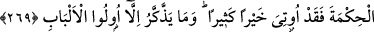
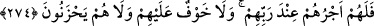

MALIN İYİSİNİ İNFÂK
267. Ey iman edenler! Kazandıklarınızın iyilerinden ve rızık olarak yerden size
çıkardıklarımızdan
hayra
harcayın.
Size
verilse,
gözünüzü
yummadan
alamayacağınız kötü malı, hayır diye vermeye kalkışmayın. Biliniz ki Allah
zengindir, övgüye lâyıktır.
268. Şeytan sizi fakirlikle korkutur ve size cimriliği telkin eder. Allah ise size
katından bir mağfiret ve bir lütuf vâdeder. Allah her şeyi ihata eden ve her şeyi
bilendir.
269. Allah, hikmeti dilediğine verir. Kime hikmet verilirse, ona pek çok hayır
verilmiş demektir. Ancak akıl sahipleri düşünüp ibret alırlar.
270. Yaptığınız her harcamayı ve adadığınız her adağı muhakkak Allah bilir.